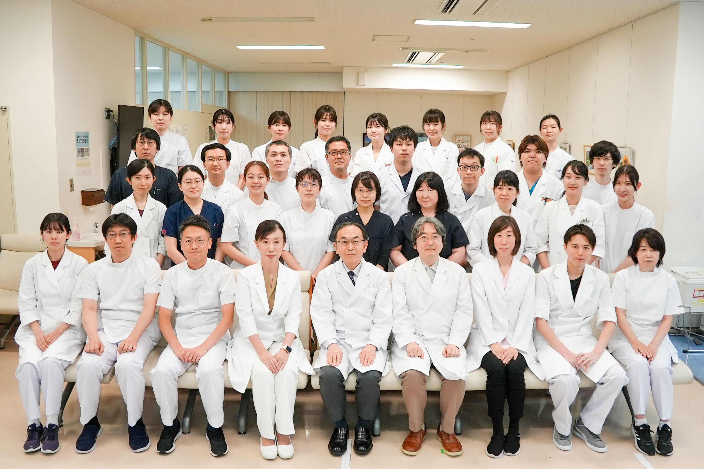

STAFF
Staff
スタッフ・メンバー紹介
Principal Investigator
教授・主宰

佐々木 宏治
Koji Sasaki, MD, PhD
東京科学大学 医学部 / 臨床検査医学分野 教授
私は血液悪性腫瘍の克服を目指し、臨床と研究の両面から取り組んでいます。
東京医科歯科大学卒業後、同大学で血液内科の研修を行い、その後米国へ留学しました。ニューヨークで内科研修を修了後、2013年よりMDアンダーソン癌センターにて白血病、造血幹細胞移植・細胞療法、血液腫瘍学の専門研修を重ね、2017年から白血病科スタッフとして診療・研究に従事しています。
血液悪性腫瘍は、病態解明と治療開発が最も進んでいる分野の一つです。近年は分子標的治療や細胞療法の進歩により、多くの患者さんに新たな希望がもたらされています。私は白血病・リンパ腫の病態を深く理解し、その知見を新しい治療法の開発へとつなげることで、がん克服への道を切り拓きたいと考えています。
志をともにする皆さんと研究・教育・臨床の現場で協力しながら、より良い医療の実現を目指せることを楽しみにしています。
研究業績（researchmap） →
東京医科歯科大学卒業後、同大学で血液内科の研修を行い、その後米国へ留学しました。ニューヨークで内科研修を修了後、2013年よりMDアンダーソン癌センターにて白血病、造血幹細胞移植・細胞療法、血液腫瘍学の専門研修を重ね、2017年から白血病科スタッフとして診療・研究に従事しています。
血液悪性腫瘍は、病態解明と治療開発が最も進んでいる分野の一つです。近年は分子標的治療や細胞療法の進歩により、多くの患者さんに新たな希望がもたらされています。私は白血病・リンパ腫の病態を深く理解し、その知見を新しい治療法の開発へとつなげることで、がん克服への道を切り拓きたいと考えています。
志をともにする皆さんと研究・教育・臨床の現場で協力しながら、より良い医療の実現を目指せることを楽しみにしています。

研究室メンバー一同（2025年）
Members
メンバー
ASSOCIATE PROFESSOR 准教授
山田 太郎
Taro Yamada, MD, PhD
ASSISTANT PROFESSOR 助教
田中 花子
Hanako Tanaka, PhD
中村 健一
Kenichi Nakamura, PhD
PhD STUDENTS 博士課程（後期）
鈴木 一郎
Ichiro Suzuki
伊藤 次郎
Jiro Ito
渡辺 三郎
Saburo Watanabe
木村 四郎
Shiro Kimura
MASTER'S STUDENTS 修士課程
小林 五郎
Goro Kobayashi
加藤 六花
Rokka Kato
佐藤 七海
Nanami Sato
高橋 八重
Yae Takahashi
山口 九美
Kumi Yamaguchi
松本 十子
Toko Matsumoto
UNDERGRADUATE STUDENTS 学部生（研究配属）
井上 凜
Rin Inoue
田村 翔太
Shota Tamura
高木 あかり
Akari Takagi
RESEARCH STAFF 研究員・技術補佐員
阿部 未来
Mirai Abe
森田 誠
Makoto Morita